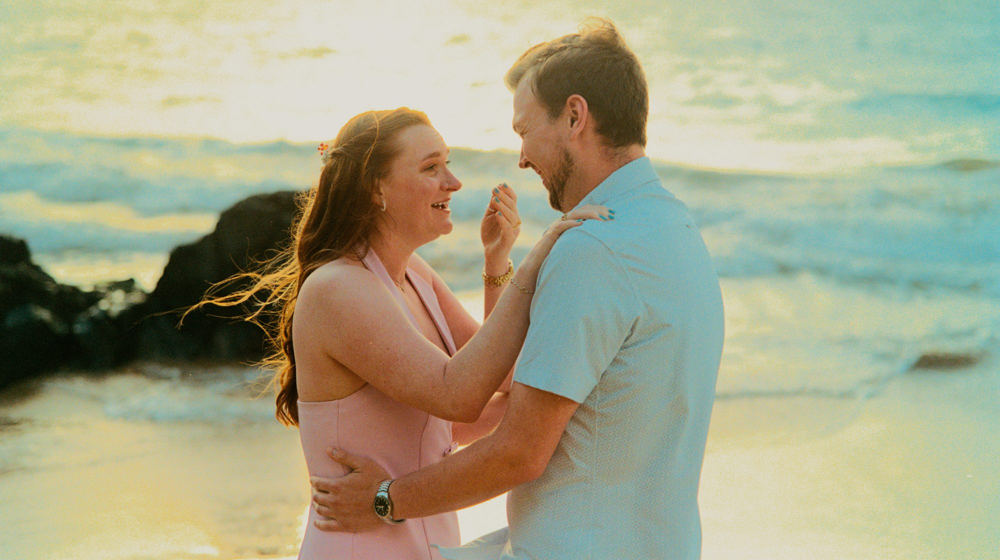

One question. Every feeling.
Quiet planning, precise timing and photographs of the moment everything changes.
Beautifully private. Carefully prepared.
A proposal has no retake. We help you choose the location, light and meeting plan, then remain discreet until the moment arrives.
After the yes, your proposal becomes a relaxed couples session—giving you both time to breathe, celebrate and take in Maui together.
As a Maui proposal photographer, we plan locations across Wailea, Makena and South Maui, choosing the spot that matches the privacy and view you're picturing.
Schedule Your Session Now


unrepeatable moment, photographed with intention.
Planning · Privacy · Local Knowledge
What partners-to-be ask us first.
How much does a Maui proposal photographer cost?
Proposal sessions start at $249, which also includes relaxed couples portraits after the proposal. Current pricing is on our Sessions & Pricing page.
How do you keep the proposal a surprise?
We stay discreet and out of sight until the moment arrives, working with you in advance on a simple arrival plan so your partner never suspects a photographer is there.
What is the best location and time for a Maui proposal?
Golden hour near sunset is most popular for its light and privacy, and we help choose a beach or viewpoint based on your vision and crowd levels.
How far in advance should we book?
Several weeks ahead is recommended, especially for sunset time slots during peak travel season.
Do you photograph proposals outside of Wailea?
Yes. While based in Wailea, we plan proposals throughout Makena and South Maui depending on the setting you want.
Tell us what you’re imagining.
We’ll help you turn the idea into a calm, unforgettable plan.
Plan My Proposal